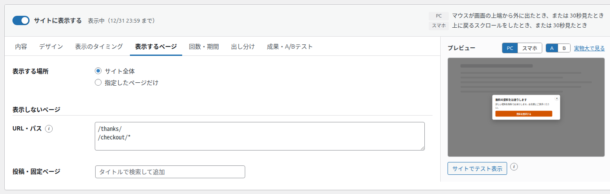
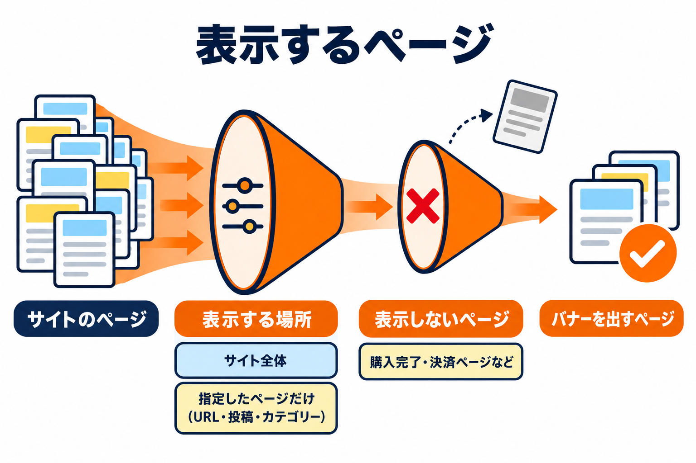
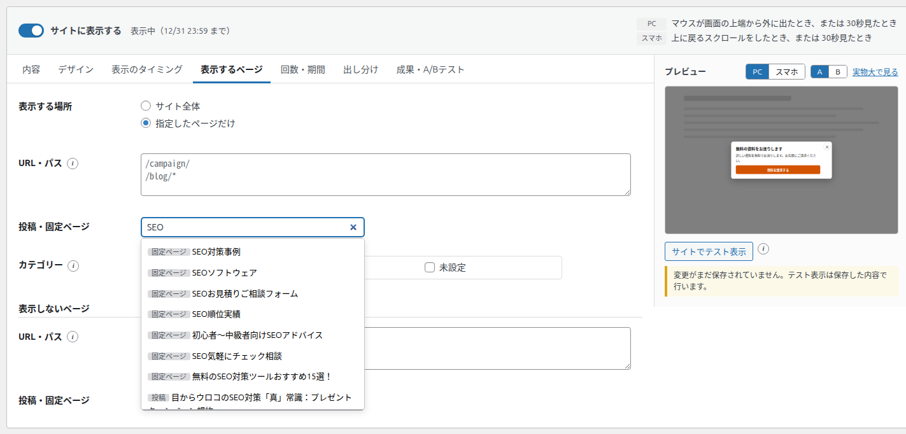

表示するページタブ
バナーを表示するページと、表示しないページを決めるタブです。


項目の一覧
| 区分 | 項目 | 種類 | 初期値 |
|---|---|---|---|
| 表示する場所 | 表示する場所 | ラジオボタン（サイト全体 / 指定したページだけ） | サイト全体 |
| 表示する場所 | URL・パス | 複数行（1行に1つ） | 空 |
| 表示する場所 | 投稿・固定ページ | 検索して追加 | なし |
| 表示する場所 | カテゴリー | チェックボックスの一覧 | なし |
| 表示しないページ | URL・パス | 複数行（1行に1つ） | 空 |
| 表示しないページ | 投稿・固定ページ | 検索して追加 | なし |
表示する場所
| 選択肢 | 表示するページ |
|---|---|
| サイト全体（初期値） | すべての公開ページに表示します（下の「表示しないページ」を除く）。 |
| 指定したページだけ | 「URL・パス」「投稿・固定ページ」「カテゴリー」の欄が表示されます。どれか1つにでも当てはまるページに表示します。何も指定しないと、どのページにも表示されません。 |

URL・パスの書き方
| 書き方 | 当てはまるページ |
|---|---|
/campaign/ | /campaign/ と、その下のページすべて（/campaign/spring/ など） |
/blog/* | * はどんな文字にも当てはまります（ワイルドカード）。/blog/ で始まるページすべて |
/ | トップページだけ |
https:// | https:// から書いても構いません。ドメインの後ろの部分（/campaign/）で判断します |
- 1行に1つずつ書きます。空の行は無視されます。
- URL の ? から後ろ（パラメータ）は判断に使いません。
- 日本語の URL は、日本語のままでも書けます。
投稿・固定ページ
1
「タイトルで検索して追加」の欄に、タイトルの一部（または投稿の番号）を入力します。「検索中…」のあと、候補が最大 20 件表示されます。
2
候補をクリックすると、欄の上に「投稿」「固定ページ」の印の付いた札として追加されます。
3
外すときは、札の × を押します。
- 検索できるのは「投稿」と「固定ページ」です。それ以外の種類のページ（独自の投稿タイプ）は、「URL・パス」で指定してください。
- 候補が無いときは「見つかりませんでした」と表示されます。
- 非公開や予約中の記事は、その記事を読める権限のある人にだけ候補に出ます。読めない記事がすでに指定されている場合は、「（表示できない記事 #番号）」と表示されます（指定は消えません）。
- キーボードでは、下矢印で候補へ移り、Enter で追加、Esc で候補を閉じます。
カテゴリー
チェックしたカテゴリーの一覧ページと、そのカテゴリーの投稿に表示します。カテゴリーが1つも無いサイトでは「選べるものがありません。」と表示されます。
表示しないページ
ここに当てはまるページには、上の「表示する場所」に当てはまっていても表示しません。購入完了・問い合わせ完了・決済のページなど、バナーを出すと困るページを指定します。書き方は上と同じです。
おすすめ: 購入や問い合わせの完了ページ（例: /thanks/）と決済のページ（例: /checkout/*）は、表示しないページに入れておきましょう。
「成果ページ」（成果・A/Bテストタブ）を「表示しないページ」に入れても、成果は数えられます。